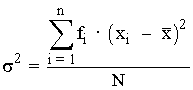
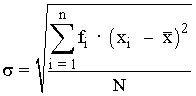
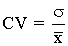
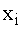
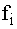
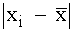
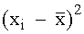
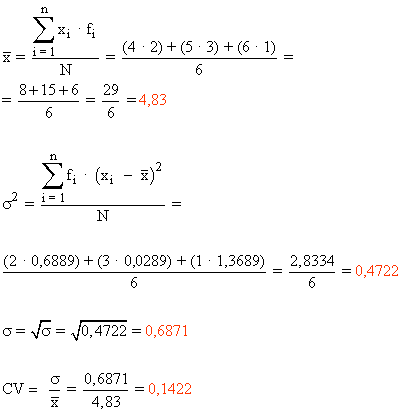
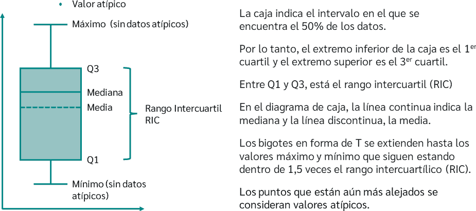
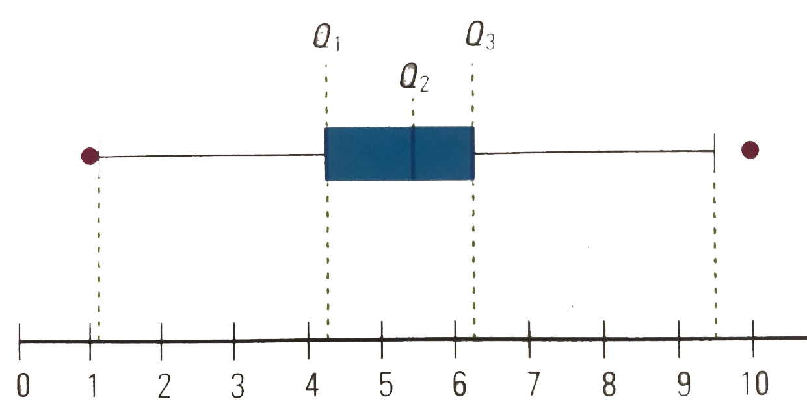

Parámetros de dispersión
Los parámetros de dispersión de un conjunto de datos nos informan si estos están más o menos separados respecto a los parámetros de centralización, es decir nos informan sobre la mayor o menor representatividad de las medidas de tendencia central.
RECORRIDO
Es la diferencia entre el valor máximo y el valor mínimo de la serie de datos. También se conoce como rango o amplitud, y se representa por r.
El recorrido es un parámetro fácil de calcular, pero que ofrece una información muy limitada, es decir, nos da una idea de la amplitud del conjunto de datos aunque está muy influido por valores extremos.
*Ejemplo:
Considerando la siguiente serie de datos:
12 15 15 16 18 19 19 19 22 23 24 24 25 30 31 49
El recorrido es:
r = Vmáx - Vmin = 49 - 12 = 37
Para calcular el recorrido con datos agrupados tomamos la diferencia entre el extremo superior del último intervalo y el extremo inferior del primero.
VARIANZA
Se define como la media aritmética de los cuadrados de las desviaciones de todos los datos o marcas de clase respecto de la media. Se representa como σ2.

DESVIACIÓN TÍPICA
Es la raíz cuadrada positiva de la varianza. Se representa como σ.

Observaciones sobre la desviación típica:
- La desviación típica es el parámetro de dispersión más utilizado.
- Si se suma una constante a todos los valores de la variable, la desviación típica no varía.
- Si se multiplican todos los valores de la variable por un mismo número, la desviación típica queda multiplicada por el mismo número.
- A mayor desviación típica mayor grado de dispersión.
COEFICIENTE DE VARIACIÓN
Es el cociente entre la desviación típica y la media aritmética de un conjunto de valores. Se representa como CV.

Observaciones sobre el coeficiente de variación:
- El CV representa el número de veces que la desviación típica contiene a la media aritmética, por tanto, cuanto mayor sea el coeficiente de variación significa que mayor número de veces contiene la desviación típica a la media aritmética y por lo tanto la media aritmética es menos representativa.
- El valor del CV se multiplica por 100 para trabajar en porcentajes.
- Diremos que la dispersión es elevada cuando el CV sea superior al 30%.
- Dados dos conjuntos de datos, aquel que tenga un CV mayor es el más disperso, el más heterogéneo.
- El valor del CV es adimensional, lo que significa que podemos comparar variables expresadas en magnitudes diferentes o en la misma magnitud pero con distintas medidas.
* Nota sobre la desviación típica y el coeficiente de variación
Hemos visto que a mayor desviación típica mayor grado de dispersión en los datos, es decir mayor variabilidad, sin embargo será el coeficiente de variación quien nos de el verdadero alcance de la dispersión de los
datos, a veces una muestra puede parecer mas dispersa que otra según la desviación típica y sin embargo no serlo, como podemos ver en el siguiente ejemplo.
*Ejemplo 1:
En un Instituto se ha aplicado el mismo test de inteligencia a dos grupos de alumnos y se han obtenido los siguientes resultados:
Grupo A: = 30 σ = 6
Grupo B: = 62 σ = 9
¿En qué grupo hay mayor dispersión?
Observando los resultados, una respuesta rápida sería que en el Grupo B hay mayor dispersión ya que la desviación típica es mayor. Veámoslo.
CV grupo A = 6/30 = 0.2
CV grupo B = 9/62 = 0.145
Los resultados de los coeficientes de variación nos muestran que hay mayor dispersión en el Grupo A ya que el coeficiente de variación es mayor que el del Grupo B.
*Ejemplo2:
Calcula las medidas de dispersión de las notas de 6 amigos. Las notas son: 4 4 5 5 5 6
|  |  |  |  |
| 4 | 2 | 0,83 | 0,6889 |
| 5 | 3 | 0,17 | 0,0289 |
| 6 | 1 | 0,17 | 1,3689 |
| Total | 6 | 2,0867 |

*Aquí os dejo un par de videos para reforzar los conceptos aprendidos:
Es un gráfico que nos proporciona una manera muy visual de ver el grado de dispersión de un conjunto de datos. Consiste en una caja rectangular delimitada por Q1 y Q3 que tiene a ambos lados unos segmentos delimitados por los valores mínimo y máximo de la variable estadística (siempre y cuando no supere 1,5 veces el rango intercuartílico IQR).
El rango intercuartílico se define como la diferencia entre Q3 y Q1.
IQR=Q3-Q1
Límite inferior admisible: Valor que está 1,5 veces por debajo del valor intercuartílico. Si es mayor que el menor de los datos, determinará el límite inferior del bigote, dejando a todos los valores de la variable menores que él como valores atípicos.
LI=Q1-1,5*IQR
Límite superior admisible: Valor que está 1,5 veces por encima del valor intercuartílico. Si es menor que el mayor de los datos, determinará el límite superior del bigote, dejando a todos los valores de la variable mayores que él como valores atípicos.
LS=Q3+1,5*IQR

*Ejemplo:
El siguiente conjunto de datos corresponde a ... Calcula el diagrama de caja y bigotes.
7,1 5,3 10,1 4,1 5,8 4,6 6,8 1 5,6 5,3 6,5 6,1 4,3 6,1 3,7 2,9
Ordenamos los datos y calculamos Q1, Q2 y Q3.
1 2,9 37 4,1 4,3 4,6 5,3 5,3 5,6 5,8 6,1 6,1 6,5 6,8 7,1 10,1
Número de datos=16
p1=1/4*16=4 p2=2/4*16=8 p3=3/4*16=12
Identificamos los datos que se encuentran en las posiciones 4, 8 y 12. Al ser números enteros, calculamos los cuartiles de la siguiente forma.
Q1=(4,1+4,3)/2=4,2 Q2=(5,3+5,6)/2=5,45 Q3=(6,1+6,5)/2=6,3
Pasamos a hallar el rango intercuartílico:
IQR=Q3-Q1=6,3-4,2=2,1
Ahora vamos a ver cuales son los extremos de los bigotes:
Vmín=1 Vmáx=10,1
LI=Q1-1,5*IQR= 4,2-1,5*2,1=1,05
LS=Q3+1,5*IQR= 6,3+1,5*2,1=9,45
Como LI>Vmín (1,05>1) y LS<Vmáx (9,45<10), LI y LS serán los límites del diagrama y Vmín y Vmáx serán valores atípicos.
